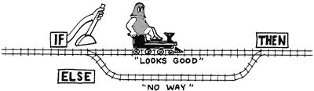
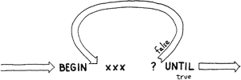
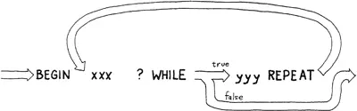
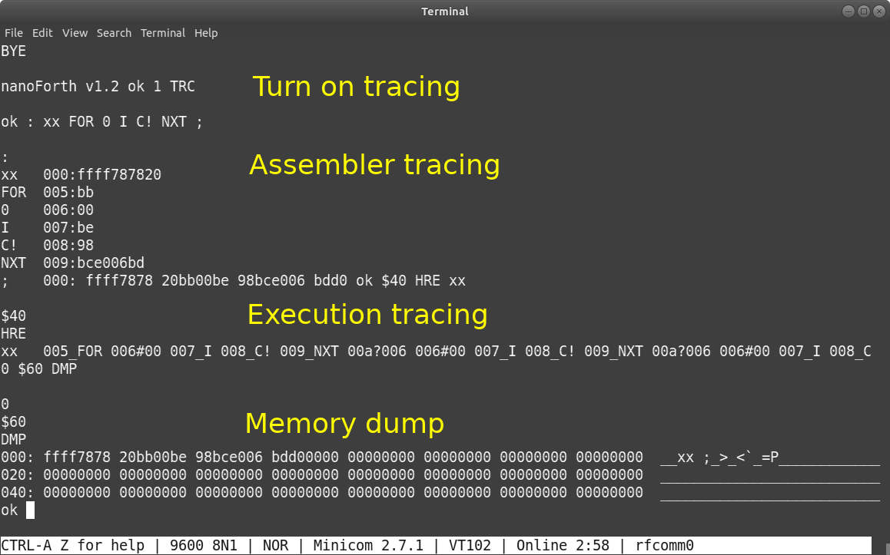

- Generated by
 1.9.8
1.9.8
|
nanoFORTH v2.2
|
At its core, nanoFORTH is a traditional parse-dispatch virtual machine interpreter with twin stacks. Essentially, it is a parser and a big switch loop. Like every other FORTH, it has a dual-personality which toggles between interpreter mode and compiler mode. In interpreter mode, it runs interactively not unlike an old HP hand-held calculator. When in compiler mode, it transcodes user defined functions into token threaded code which is compact and portable. The latter ability enables future units to exchange not only data packets but also instruction code segments to each other. This can bring a big grin but, of course, we later might need to deal with the red flag raised by security concerning parties.
Compared to any FORTH language tutorial, you probably will notice that the length of a word of nanoFORTH, unlike most are 31-character, is 3 characters or less. Core vocabulary is a short list which means makers need to define one if a more elaborated function is needed. There is no floating-point or meta-compiler supported. These depart from standard FORTHs and begs the question of whether nanoFORTH is truly a FORTH. Well, our target platform is a very small MCU and our application has probably a dozen of functions. Aside from saving a few bytes, it has the benefit in simplifying internal searching. The theory says that our brain is pretty good at filling the gap. So, hopefully, with a little bit creativity, our code can be clean and still maintainable. To qualify it as a FORTH or not, probably doesn't matter that much so long as it behaves well, runs fast enough, and useful for our needs.
|address|object|growth|Forth|EEPROM| |–:|:—:|:–:|:–:|:–:| |0x900|Arduino RAM max|_|.|.| |0x8f6|global/static variables/Arduino heap|⇩|.|.| |...|...|...|.|.| |0x618|Forth input buffer|⇧|X|.| |0x617| return stack |⇩|X|.| |...|0x100 shared space|...|X|.| |0x518| data stack |⇧|X|.| |...|user defined words|⇧|X|X| |0x1e8| user dictionary starts|⇧|X|X| |...|Arduino libraries|_|.|.| |0x100|Arduino RAM starts|_|.|.| |0x000|Arduino registers|_|.|.|
Note, we have the 1K EEPROM sitting on the side which can save and restore the user dictionary when instructed.
nanoFORTH handles only integer numbers.
Examples
20 ⏎ ➤ 20_ok
10 $10 ⏎ ➤ 20_10_16_ok
|opcode|stack|description| |:–|:–|:–| |DRP|
( w -- )|drop| |DUP|( w -- w w )|duplicate| |SWP|( a b -- b a )|swap| |OVR|( a b -- a b a )|over| |ROT|( a b c -- b c a )|rotate|Examples
20 10 ⏎ ➤ 20_10_ok
OVR ⏎ ➤ 20_10_20_ok
DRP ⏎ ➤ 20_10_ok
SWP ⏎ ➤ 10_20_ok
DUP ⏎ ➤ 10_20_20_ok
ROT ⏎ ➤ 20_20_10_ok
|opcode|stack|description| |:–|:–|:–| |+ |
( a b -- a+b )|add| |- |( a b -- a-b )|subtract| |* |( a b -- a*b )|multiply| |/ |( a b -- a/b )|divide| |MOD|( a b -- a%b)|modulo| |NEG|( a -- -a )|negate| |ABS|( a -- abs(a) )|absolute value of a| |MIN|( a b -- min(a, b) )|minimum value between a and b| |MAX|( a b -- max(a, b) )|maximum value between a and b|Examples
17 5 + ⏎ ➤ 22_ok
1 2 3 4 + + + ⏎ ➤ 10_ok
10 3 / ⏎ ➤ 3_ok
|opcode|stack|description| |:–|:–|:–| |AND|
( a b -- a&b )|binary and| |OR |( a b -- aIb )|binary or| |XOR|( a b -- a^b )|binary xor| |NOT|( a -- ^a )|binary not| |LSH|( n i -- n<<=i )|left shift| |RSH|( n i -- n>>=i )|right shift| |= |( a b -- a==b )|equal| |< |( a b -- a<b )|less than| |> |( a b -- a>b )|greater than| |<>|( a b -- a!=b )|not equal|
|opcode|stack|immediate|description| |:–|:–|:–|:–| |: |
( -- )|yes|start defining a new word| |; |( -- )|yes|end of word definition| |WRD|( -- )|yes|list all words defined in nanoFORTH dictionaries| |FGT|( -- )|yes|forget/remove functions| |HRE|( -- w )| |get current user dictionary pointer|
|branching ops|description| |:–|:–| |f IF xxx THN|conditional branch| |f IF xxx ELS yyy THN|

|BGN xxx f UTL|

|BGN xxx f WHL yyy RPT|

|n FOR xxx NXT|for loop, index value I count down from n to 1|
|opcode|stack|immediate|description| |:–|:–|:–|:–| |I |
( -- w )| |fetch word from top of return stack, aka R@ in other FORTHs| |>R|( w -- )| |push word on top of data stack onto return stack| |R>|( -- w )| | pop top of return stack value and push it onto data stack|
- note: FORTH programmers often use return stack as temp storage. However do use >R and R> carefully and in Compile mode only or you risk messing up call depth which can crash FORTH interpreter.
|opcode|stack|immediate|description| |:–|:–|:–|:–| |@ |
( a -- w )| |fetch a 16-bit value from memory address 'a'| |! |( a w -- )| |store a 16-bit value to memory address 'a'| |C@|( a -- w )| |fetch a single byte from memory address 'a'| |C! |( a w -- )| |store a byte (or lower byte of the word) to memory address 'a'|
- note: the above opcodes read/write nanoFORTH memory space directly. It provides the power to peek and poke random memory but also to shoot yourself on the foot. Use with caution.
Examples see next section
|opcode|stack|immediate|description| |:–|:–|:–|:–| |VAR|
( -- )|yes|define a 16-bit variable| |VAL|( w -- )|yes|define a 16-bit value (i.e. constant)| |ALO|( w -- )| |allocate extra w bytes on user dictionary (for array allocation)|Examples
VAR x ➤ ok (a variable x is created on user dictionary)
3 x ! ➤ ok (store 3 into variable x)
x @ 5 + ➤ 8_ok (fetch value of x add 5 to it)
32 VAL N ⏎ ➤ ok (a const N is created on user dictionary)
N 1 + ⏎ ➤ 33_ok
VAR z 6 ALO ⏎ ➤ ok (a variable z with 8 (2+6 extra) bytes allocated, i.e. z[0..3])
5 z 4 + ! ⏎ ➤ ok (5 is stored into z[2])
z 4 + @ ⏎ ➤ 5_ok (retrieve z[2] onto data stack)
|opcode|stack|immediate|description| |:–|:–|:–|:–| |KEY |
( -- c )| |get a byte from input console| |EMT |( c -- )| |write a byte to output console| |CR |( -- )| |send a <return> to console| |. |( w -- )| |print the value on data stack to output console| |." |`( -- )`| |send the following string (terminated with a ") to output console| |S" |`( -- a n )`| |put string (terminated with a ") address and length on TOS| |TYP |( a n -- )| |type the string at address with length n| |HEX |( -- )|yes|change input/output to hexadecimal i.e. base 16| |DEC |( -- )|yes|change input/output to decimal i.e. base 10|Examples
: hi FOR ." hello!" 33 EMT CR NXT ; ⏎ ➤ ok (hi is now defined in user dictionary)
3 hi ⏎
➤ hello!
➤ hello!
➤ hello! ok
: s1 S" one!" ;
: s0 S" zero!" ;⏎ ➤ ok (s1 s0 are defined in user dictionary)
: chk IF s1 ELS s0 THN TYP ;⏎ ➤ ok
1 chk ⏎ ➤ one! ok
0 chk ⏎ ➤ zero! ok
|opcode|stack|immediate|description| |:–|:–|:–|:–| |BYE|
( -- )|yes|reset nanoFORTH on Arduino, exit to OS on other platform| |DMP|( a w -- )|yes|dump nanoFORTH user dictionary from address 'a' for w bytes| |TRC|( t -- )| |enable/disable execution tracing|Examples

|opcode|stack|immediate|description| |:–|:–|:–|:–| |SAV|
( -- )|yes|save user dictionary into Arduino Flash Memory| |LD |( -- )|yes|restore user dictionary from Arduino Flash Memory| |SEX|( -- )|yes|SAV with autorun flag set in EEPROM for reboot/execution|
|opcode|stack|description| |:–|:–|:–| |CLK|
( -- d )|fetch Arduino millis() value onto data stack as a double number| |DLY|( w -- )|wait milliseconds (yield to hardware tasks)| |PIN|( w p -- )|pinMode(p, w)| |IN |( p -- w )|digitalRead(p)| |OUT|( w p -- )|if p=0x0xx, digitalWrite(xx, w),
if p=0x1xx, xx masks PORTD (pin 0~7) i.e. multi-port write,
if p=0x2xx, xx masks PORTB (pin 8~13)
if p=0x3xx, xx masks PORTC (analog A0~A6)| |AIN|( p -- w )|analogRead(p)| |PWM|( w p -- )|analogWrite(p, w)|Examples
1 13 OUT ⏎ ➤ ok (built-in LED is turn on, i.e. digitalWrite(13, 1) called)
$F0 $1F0 OUT ⏎ ➤ ok (turn on pin 4,5,6,7 at once)
|opcode|stack|description| |:–|:–|:–| |API|
( n -- )|call API by number registered via ef_api(n, func) in Arduino sketch|
**Examples (see ~/examples/4_api/4_api.ino for details) **
|opcode|stack|immediate|description| |:–|:–|:–|:–| |TMI|
( n i -- )|yes|set timer ISR with period at n microsecond. n is a U16 unsigned number i.e. max ~64 seconds
set n to 0 disable this ISR| |PCI|( p -- )|yes|capture pin #p change (either HIGH to LOW or LOW to HIGH)| |TME|( f -- )| |enable/disable timer interrupt, 0:disable, 1:enable| |PCE|( f -- )| |enable/disable pin change interrupt, 0:disable, 1:enable|Note: nanoForth utilizes timer2 for timer interrupt. It might conflict with libraries which also uses timer2 such as Tone().
Examples
: s_a 65 emt ; ➤ ok (define a word s_a which emit 'A' on console)
: s_b 66 emt ; ➤ ok (define a word s_b which emit 'B' on console)
10000 0 TMI s_a ➤ ok (set s_a in handler slot #0, tigger every 10 seconds)
25000 1 TMI s_b ➤ ok (set s_b in handler slot #1, tigger every 25 seconds)
1 TME ➤ ok (enable timer interrupt)
AABAAABAABAA (interrupt routines been called)
0 1 TMI s_b ➤ ok (disable s_b in handler slot #1)
AAAAAAA
0 TME ➤ ok (disable timer interrupt)
8 PCI s_a ➤ ok (run s_a when pin 8 changed)
1 PCE ➤ ok (enable pin change interrupt)
AA (assuming you have a push button hooked up at pin 8)
|opcode|stack|description| |:–|:–|:–| |D+ |
( d1 d0 -- d1+d0 )|add two doubles| |D- |( d1 d0 -- d1-d0 )|subtract two doubles| |DNG|( d0 -- -d0 )|negate a double number|Examples
CLK 1000 DLY CLK D- DNG ⏎ ➤ 1000_0_ok
|opcode|stack|description| |:–|:–|:–| |CRE|
( -- )|create a word with link and name field| |, |( n -- )|comma, add a 16-bit value onto dictionary| |C, |( n -- )|byte comma, add a 8-bit value onto dictionary| |' |( -- xt )|tick, fetch xt (parameter field address) of a word| |EXE|( xt -- )|execute an xt address|Examples
: aa 123 ; ⏎ ➤ ok (create a word)
CRE bb ⏎ ➤ ok (create a empty word bb with it link and name field only)
' aa ⏎ ➤ 5_ok (aa's xt address is put on top of stack)
$C0 OR , ⏎ ➤ ok (combile the address and call flag onto dictionary)
$F0 , ⏎ ➤ ok (compile RET opcode onto dictionary)
bb ⏎ ➤ 123_ok (bb calls aa, so returns 123 on stack)
' bb ⏎ ➤ 123_11_ok (get bb's xt address)
EXE ➤ 123_123_ok (execute bb's xt directly)
|size|field| |:–|:–| |fixed 16-bit|address to previous word, 0xffff is terminator| |fixed 3-byte|function name| |n-byte
depends on the length of the function| * compiled opcodes (see next section), or
* address of a user defined word|
|opcode|stack|description| |:–|:–|:–| |1-byte literal|
0nnn nnnn|0..127, often used, speeds up core| |3-byte literal|1011 1111 snnn nnnn nnnn nnnn|16-bit signed integer| |1-byte primitive|10oo oooo|6-bit opcode i.e. 64 primitives| |branching opcodes|11BB aaaa aaaa aaaa|12-bit address i.e. 4K space| |n-byte string|len, byte, byte, ...|256 bytes max, used in print string|
1. Why - Review nanoFORTH command examples
2. How - Intall nanoFORTH